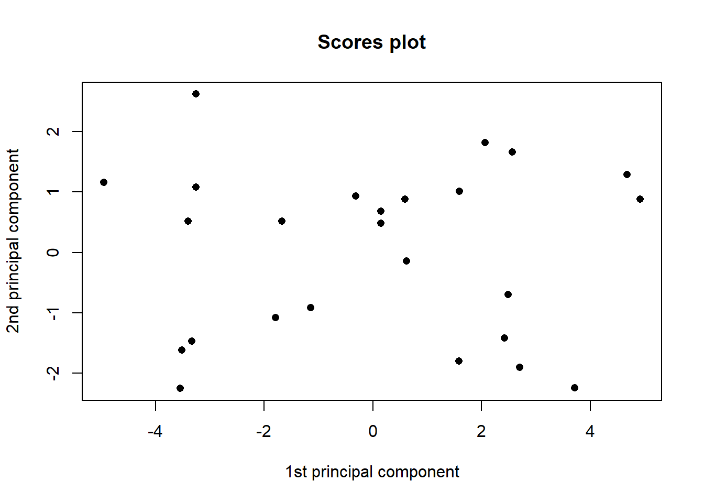
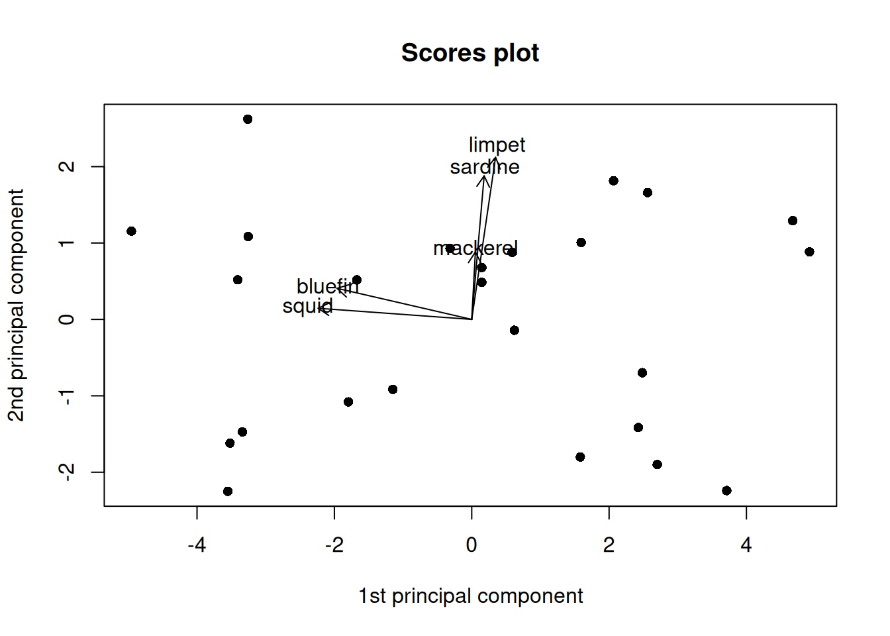
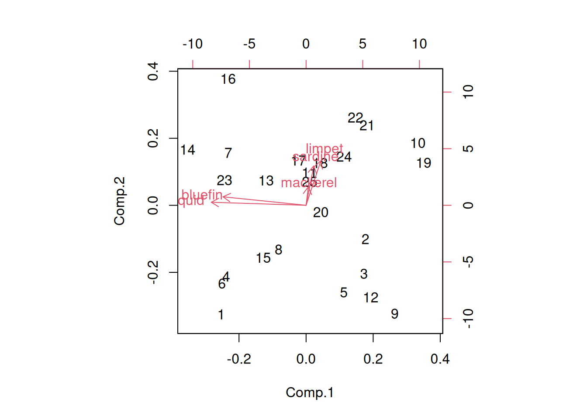

Our data is a 25 row, 6 column data frame, describing catch of 5 different fisheries species (columns 2-6) caught across 25 hauls (column 1). We want to know if certain species are associated with each other. Lets look a little deeper at the data:
log(0) returnes negative infinity. That’s going to be a problem later in our analysis. We can fix that by adding a small increment before taking the log. Keep in mind though that each species has a different magnitude in this dataset, and adding an inappropriate increment could cause us trouble later:
# Test boxplots of different incrementsboxplot(log(data_test$limpet), # Warning because of -Inflog(data_test$limpet +1),log(data_test$limpet +0.001),log(data_test$limpet +0.000000001))
Warning in bplt(at[i], wid = width[i], stats = z$stats[, i], out =
z$out[z$group == : Outlier (-Inf) in boxplot 1 is not drawn
If the increment is too big, we eliminate the variance in our data. If the increment is to small, we create an outlier.
1.3 Running PCA
Now that we’ve checked and transformed our data, we’re ready to run PCA. There are two kinds of PCA: We can run PCA on the Covariance Matrix, or the Correlation Matrix.
1.3.1 Covariance Matrix
We can run PCA on the covariance matrix as follows:
# Run PCA - Covariancepca_1 =princomp(data_log[,-1]) # We don't want haul in our PCA!summary(pca_1)
Importance of components:
Comp.1 Comp.2 Comp.3 Comp.4 Comp.5
Standard deviation 2.8055354 1.3857803 1.3351790 0.55247629 0.182937780
Proportion of Variance 0.6607195 0.1612035 0.1496458 0.02562199 0.002809263
Cumulative Proportion 0.6607195 0.8219229 0.9715687 0.99719074 1.000000000
Running a summary on our PCA gives us the standard deviation of each principal component, the proportion of variance explained by each principal component, and the cumulative variance explained as we add each component. Here, we see the first principal component explains 66% of the variance. The second explains 16%, which adds up to 82% with the first component, and so on up to component 5. We can visualize the cumulative variance explained with a scree plot:
# Generate scree plotplot(pca_1, type ='l') # Scree is built into the plot for PCA
We see most of the variance is explained by component 1, then a similar lesser amount is explained by 2 and 3, followed by another drop to 4 and 5.
The PCA loadings are the correlations between the variables and each component. Here, we see bluefin and squid are strongly negatively correlated with component 1, while mackerel, sardine, and limpet are weakly positively correlated with component 1. We can continue this type of interpretation through the other components as well.
Our PCA object also contains the PCA scores for each individual data point:
Scores are the value of each data point on each principal component. Lets try plotting them:
# Plot scores - components 1 and 2plot(pca_1$scores[,1], # Scores on component 1 pca_1$scores[,2], # Scores on component 3pch=16, # Point 16 (colored circle)xlab="1st principal component",ylab="2nd principal component",main="Scores plot") # Axis and plot labels

This generates a scatterplot showing us the value of each data point in principal components 1 (x) and 2 (y). Now lets add on the loadings:
# Plot scores - components 1 and 2plot(pca_1$scores[,1], # Scores on component 1 pca_1$scores[,2], # Scores on component 3pch=16, # Point 16 (colored circle)xlab="1st principal component",ylab="2nd principal component",main="Scores plot") # Axis and plot labels# Add loadings to plotarrows(0,0, # Draw arrows from zero pca_1$loadings[,1], # Draw to PC1 loading in X pca_1$loadings[,2], # Draw to PC2 loading in Ycol="black", length =0.1) # Arrow color and arrowhead lengthtext(pca_1$loadings[,1],pca_1$loadings[,2],names(data_log[,-1]),cex=1.0 ,col="black") # Add text labels for each variable
The arrows are a little small, so let’s add a scaling factor:
# Plot scores - components 1 and 2plot(pca_1$scores[,1], # Scores on component 1 pca_1$scores[,2], # Scores on component 3pch=16, # Point 16 (colored circle)xlab="1st principal component",ylab="2nd principal component",main="Scores plot") # Axis and plot labels# Add loadings to plotsf =3# Scaling factorsft =3.2# Scaling factor for textarrows(0,0, # Draw arrows from zero pca_1$loadings[,1]*sf, # Draw to PC1 * scaling factor loading in X pca_1$loadings[,2]*sf, # Draw to PC2 * scaling factor loading in Ycol="black", length =0.1) # Arrow color and arrowhead lengthtext(pca_1$loadings[,1]*sft,pca_1$loadings[,2]*sft, names(data_log[,-1]), cex=1.0, col="black") # Add text labels for each variable
What about the haul number? Does that have an effect? Let’s try adding that on as well:
# Create a color palettecolfunc =colorRampPalette(c('orangered1', 'turquoise2'))# Plot scores - components 1 and 2plot(pca_1$scores[,1], # Scores on component 1 pca_1$scores[,2], # Scores on component 3pch=16, # Point 16 (colored circle)col =colfunc(nrow(pca_1$scores)), # Color points by haul using our color palettexlab="1st principal component",ylab="2nd principal component",main="Scores plot") # Axis and plot labels# Add loadings to plotsf =3# Scaling factorsft =3.2# Scaling factor for textarrows(0,0, # Draw arrows from zero pca_1$loadings[,1]*sf, # Draw to PC1 * scaling factor loading in X pca_1$loadings[,2]*sf, # Draw to PC2 * scaling factor loading in Ycol="black", length =0.1) # Arrow color and arrowhead lengthtext(pca_1$loadings[,1]*sft,pca_1$loadings[,2]*sft, names(data_log[,-1]), cex=1.0, col="black") # Add text labels for each variable
Since we used color for haul, we need to add a legend:
# Set plot layoutlayout(matrix(1:2,ncol=2), # 1 row, 2 columnswidth =c(2,1), # Widthheight =c(1,1)) # Height# Create a color palettecolfunc =colorRampPalette(c('orangered1', 'turquoise2'))# Plot scores - components 1 and 2plot(pca_1$scores[,1], # Scores on component 1 pca_1$scores[,2], # Scores on component 3pch=16, # Point 16 (colored circle)col =colfunc(nrow(pca_1$scores)), # Color points by haul using our color palettexlab="1st principal component",ylab="2nd principal component",main="Scores plot") # Axis and plot labels# Add loadings to plotsf =3# Scaling factorsft =3.2# Scaling factor for textarrows(0,0, # Draw arrows from zero pca_1$loadings[,1]*sf, # Draw to PC1 * scaling factor loading in X pca_1$loadings[,2]*sf, # Draw to PC2 * scaling factor loading in Ycol="black", length =0.1) # Arrow color and arrowhead lengthtext(pca_1$loadings[,1]*sft,pca_1$loadings[,2]*sft, names(data_log[,-1]), cex=1.0, col="black") # Add text labels for each variable# Generate legendlegend_image <-as.raster(matrix(colfunc(nrow(pca_1$scores)), ncol=1))plot(c(0,2),c(0,1),type ='n', axes = F,xlab ='', ylab ='', main ='Haul')text(x=1.5, y =seq(0,1,l=5), labels =seq(1,25,l=5))rasterImage(legend_image, 0, 0, 1,1)

Now we have a completed scores plot with loadings arrows. How would you interpret this plot?
1.3.2 Correlation Matrix
Now let’s try the correlation matrix. The correlation matrix performs the same analysis, but on standardized data. The princomp() function does this for us if we set cor = T:
# Run PCA - Correlationpca_2 =princomp(data_log[,-1], cor = T)summary(pca_2)
Importance of components:
Comp.1 Comp.2 Comp.3 Comp.4 Comp.5
Standard deviation 1.595782 1.2503536 0.70708572 0.57220519 0.25041296
Proportion of Variance 0.509304 0.3126768 0.09999404 0.06548376 0.01254133
Cumulative Proportion 0.509304 0.8219809 0.92197491 0.98745867 1.00000000
# In case you don't believe me, heres the covariance matrix if we pre-standardize the datapca_test =princomp(scale(data_log[-1]))summary(pca_test)
Importance of components:
Comp.1 Comp.2 Comp.3 Comp.4 Comp.5
Standard deviation 1.563541 1.2250914 0.69279969 0.56064429 0.24535359
Proportion of Variance 0.509304 0.3126768 0.09999404 0.06548376 0.01254133
Cumulative Proportion 0.509304 0.8219809 0.92197491 0.98745867 1.00000000
Now we can go through the same pattern of analyses as we did for covariance:
# Generate scree plotplot(pca_2, type ='l') # Scree is built into the plot for PCA
# Set plot layoutlayout(matrix(1:2,ncol=2), # 1 row, 2 columnswidth =c(2,1), # Widthheight =c(1,1)) # Height# Create a color palettecolfunc =colorRampPalette(c('orangered1', 'turquoise2'))# Plot scores - components 1 and 2plot(pca_2$scores[,1], # Scores on component 1 pca_2$scores[,2], # Scores on component 3pch=16, # Point 16 (colored circle)col =colfunc(nrow(pca_2$scores)), # Color points by haul using our color palettexlab="1st principal component",ylab="2nd principal component",main="Scores plot") # Axis and plot labels# Add loadings to plotsf =3# Scaling factorsft =3.2# Scaling factor for textarrows(0,0, # Draw arrows from zero pca_2$loadings[,1]*sf, # Draw to PC1 * scaling factor loading in X pca_2$loadings[,2]*sf, # Draw to PC2 * scaling factor loading in Ycol="black", length =0.1) # Arrow color and arrowhead lengthtext(pca_2$loadings[,1]*sft,pca_2$loadings[,2]*sft, names(data_log[,-1]), cex=1.0, col="black") # Add text labels for each variable# Generate legendlegend_image <-as.raster(matrix(colfunc(nrow(pca_2$scores)), ncol=1))plot(c(0,2),c(0,1),type ='n', axes = F,xlab ='', ylab ='', main ='Haul')text(x=1.5, y =seq(0,1,l=5), labels =seq(1,25,l=5))rasterImage(legend_image, 0, 0, 1,1)
How would you interpret this plot? Does it differ from the covariance plot?
1.3.3 Alternative Methods
There are a few other ways you can generate, and/or plot your PCAs if you prefer.
1.3.3.1 Biplot
# Exploring biplotbiplot(pca_1) # Covariance
biplot(pca_2) # Correlation
1.3.3.2 ggplot
library(ggplot2)# ggplot version - Covariance# turn PCA scores into data framepca_1_plot =data.frame(Haul = data_log$Haul, pca_1$scores) # Turn PCA loadings into data frame (This gets a little complicated)pca_1_loadings =as.data.frame(matrix(as.numeric(pca_1$loadings), dim(pca_1$loadings)[1], dim(pca_1$loadings)[2]))colnames(pca_1_loadings) =colnames(pca_1_plot)[-1]# Plotggplot(pca_1_plot, aes(x = Comp.1, y = Comp.2, color = Haul)) +# Scoresgeom_point() +scale_colour_distiller(palette =15) +# Loadingsgeom_segment(data = pca_1_loadings, aes(x =0, y =0,xend = Comp.1 , yend = Comp.2), arrow =arrow(length =unit(0.3, "cm"), type ="open", angle =25), linewidth =1, color ="darkblue") +# Labelsgeom_text(data = pca_1_loadings, color ='darkblue', nudge_x =0.2, nudge_y =0.2, # Labelsaes(x = Comp.1, y = Comp.2, label =colnames(data_log)[-1]))
# ggplot version - Correlation# turn PCA scores into data framepca_2_plot =data.frame(Haul = data_log$Haul, pca_2$scores) # Turn PCA loadings into data framepca_2_loadings =as.data.frame(matrix(as.numeric(pca_2$loadings), dim(pca_2$loadings)[1], dim(pca_2$loadings)[2]))colnames(pca_2_loadings) =colnames(pca_2_plot)[-1]# Plotggplot(pca_2_plot, aes(x = Comp.1, y = Comp.2, color = Haul)) +# Scoresgeom_point() +scale_colour_distiller(palette =15) +# Loadingsgeom_segment(data = pca_2_loadings, aes(x =0, y =0,xend = Comp.1 , yend = Comp.2), arrow =arrow(length =unit(0.3, "cm"), type ="open", angle =25), linewidth =1, color ="darkblue") +# Labelsgeom_text(data = pca_2_loadings, color ='darkblue', nudge_x =0.2, nudge_y =0.2, # Labelsaes(x = Comp.1, y = Comp.2, label =colnames(data_log)[-1]))
You can also run PCA using the prcomp() function instead of princomp(), setting scale = T if you want the correlation matrix. You can then use autoplot() with the ggfortify package to plot the results.
# ggplot v2library(ggfortify)# Run PCA - Covariancepca_1a =prcomp(data_log[,-1])# Run autoplotautoplot(pca_1a, data = data_log, color ='Hauls', loadings = T, loadings.label = T)

# Run PCA - Correlationpca_2a =prcomp(data_log[,-1], scale = T)# Run autoplotautoplot(pca_2a, data = data_log, color ='Hauls', loadings = T, loadings.label = T)
1.4 Varimax Rotation (Optional)
Varimax rotation attempts to improve the interpretability of PCA results by lining up loadings with the axes. This can be useful, particularly with large numbers of variables.
Note that it’s pretty hard to tell the hauls apart using this color scale. Make sure your plots are always clear and readable.
1.5 Tips for your assignment:
Some things you may want to think about for your assignment:
1. Do your covariance and correlation plots differ? Do you think one is better suited to answering your research question? Why? Is your answer conceptual, or does it have to do with the results? Both?
2. How would you quantitatively examine the effect of haul on the PCA scores above? Is it associated with any of the principal components?
3. How would you interpret your statistical results biologically? You don’t have to be right, but don’t be vague, and don’t contradict your results.